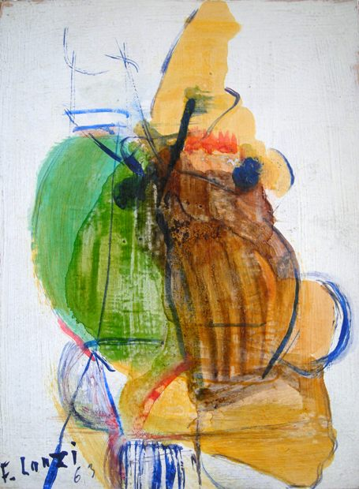

Francois Lanzi
1916 – 1988
Artist Biography
Francois Lanzi was born in Corsica and studied art in Paris under Guillot de Raffaillac. A prisoner of war from 1940-45, he came to live in the UK in 1954 and exhibited at a number of London Galleries including Redfern Gallery 1957, Royal Society of British Artists Gallery 1959 & 1960, Savage Gallery 1961 and Royal Academy 1965. Lanzi also had a number of exhibitions at the Artists International Association (AIA) in Soho, notably a solo exhibition in April-May 1967. In addition he showed in the provinces, including Stone Gallery at Newcastle in 1961. A promising career was stymied by Lanzi becoming a virtual recluse from the 1960s, although he continued to paint and produce collages throughout his life at his Chiddingfold, Surrey home. A major retrospective was held in 1994 at The Gallery in Woking. Lanzi’s work was in the ICI collection and is in a number of private collections in Britain, France and the United States.

Untitled, 1963